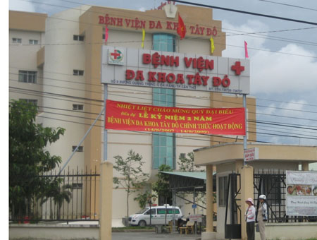

BỆNH VIỆN ĐA KHOA CẦN THƠ HƠN 30 NĂM CŨ
Cho dù trọng tâm các chuyến du khảo là “môi sinh” nhưng bệnh viện, trường học là nơi tôi vẫn thường tới thăm khi qua các tỉnh An Giang, Hậu Giang và Tiền Giang. Có thể nói, có một "mẫu số chung về tình trạng y tế và giáo dục’’ nơi các tỉnh ĐBSCL mà bệnh viện Đa khoa Cần Thơ có thể xem như một điển hình.
Tuy bề thế là một bệnh viện lớn của Tây Đô nhưng phòng ốc thì chật chội, cũ kỹ từ hơn 30 năm sau ngày giải phóng, không được sửa sang nên xuống cấp, dụng cụ máy móc nếu chưa hư hỏng thì cũng đã lỗi thời. Có thể ví bệnh viện ấy như một chiếc xe đò cũ kỹ với 40 chỗ mà vẫn phải ì ạch chở hàng trăm khách, nghĩa là “quá tải” để chạy trên một con lộ cũng không kém gập ghềnh xuống cấp. Chẳng có an toàn gì để bước lên một chuyến xe như vậy nhưng là những “người bệnh” thì chẳng có một chọn lựa nào khác.
Cuối tháng 8-2006, một ngày như mọi ngày, cho dù đã sang chiều, số bệnh nhận chờ khám nơi phòng ngoại chẩn và cả chờ lãnh thuốc vẫn còn đông nghẹt. Trên 500 bệnh nhân tới bệnh viện mỗi ngày chờ được khám là con số “thường nhật”. Trên khuôn mặt họ, ngoài vẻ mỏi mệt, bệnh hoạn nhưng như từ bao giờ vẫn toát ra vẻ chịu đựng. Một bác sĩ phải khám từ 70 tới 100 lượt bệnh/ngày không phải là không có. Phòng Cấp Cứu, ngoài tấm bảng hiệu thì bên trong trang thiết bị thật thô sơ. Rồi cảnh tượng trong cơn mưa rào nhiệt đới tới bất chợt, với mùi hơi đất xông lên, bệnh nhân được thân nhân khiêng cáng từ phòng cấp cứu lên trại bệnh, dưới trời mưa không có gì che chở. Lên tới trại bệnh thì càng thêm não lòng về tình trạng giữa số giường và số người bệnh. Trên mỗi giường sắt cá nhân có trải chiếu là hai người nằm đối đầu, nhưng vẫn còn thiếu, nên có nơi người ta phải kê sát hai giường lại với nhau cho 5, thay vì 4 người nằm, vẫn còn hơn là xuống nằm đất. Với một người khỏe mạnh “không bệnh” phải nằm lại ngày đêm trong điều kiện ấy, chắc chắn cũng phải sinh bệnh. Đã thế, thời gian nằm điều trị cũng ngắn nhất, bệnh nhân phải xuất viện sớm hơn để có chỗ cho những bệnh nhân mới khác.
Số bệnh nhân thì đông, đa số thì nghèo từ phòng đợi tới phòng khám, phòng cấp cứu rồi lên tới trại bệnh, tất cả đều trong một tình trạng “quá tải '' quá sức chứa như vậy. Do nghề nghiệp，cho dù đã quen với môi trường bệnh viện, nhưng phải nói là không khí nơi đây rất ngột ngạt, một thứ mùi “nhà thương” rất khó tả vì không đủ nhân sự để giữ gìn và chăm sóc.
Nơi phòng “Lọc máu Nhân tạo / Hemodialysis Unit”，máy móc thì cũ kỹ nhưng vẫn cứ rỉ rả hoạt động và không còn một giường trống. Trưởng phòng là một bác sĩ trẻ ngồi bên một chồng hồ sơ bệnh lý dày cộm. Anh giới thiệu với tôi một "cộng sự viên vô giá’’ tuổi trung niên vẻ ít nói. Không có dụng cụ thay thế, máy lọc nào hư anh ấy cũng cố sửa cho bằng được, nhờ vậy mà còn có được một số máy hoạt động.
Với người bệnh suy thận (ESRD / End Stage Renal Disease) với hai nguyên nhân chủ yếu ở Việt Nam hiện nay là bệnh tiểu đường, bệnh cao huyết áp không được chữa trị, nếu không được lọc máu tuần 3 lần thì chỉ có chết. Trừ bác sĩ trưởng khoa, ít ai biết tới người anh hùng vô danh ấy. Hơn 30 năm sống với y nghiệp, hình ảnh của những cô điều dưỡng áo trắng những bác y công vui vẻ và ẩn nhẫn làm việc bên những người bệnh nghèo khổ như vậy, vẫn đem cho mọi người niềm hy vọng và cả lòng ngưỡng mộ.
Một cách để biện minh và giải thích cho tình trạng trên, là các bệnh viện hay nói chung là ngành y tế không có đủ kinh phí. Bảo rằng đất nước còn nghèo thì không đúng, vấn đề là nhận thức đâu là ưu tiên. Tiềm năng xây dựng cơ sở vật chất, không phải là không có; bằng chứng là khắp các tỉnh ĐBSCL, các cơ quan nhà nước nơi nào cũng sáng choang và uy nghi, như ủy Ban Nhân Dân tỉnh Cần Thơ có tầm vóc của một Dinh Độc Lập thu nhỏ, rồi trụ sở Quân đội nhân dân, Công an nhân dân...
Dự án bệnh viện Đa Khoa mới với khẩu hiệu '' Đến với Tây Đô, đến với niềm tin'' dự trù hoàn tất đầu năm 2006, nhưng.....

Bệnh viện Đa khoa Tây Đô mới vẫn còn xây cất dở dang với bên ngoài là những cốt và khung sắt, chuẩn bị cho hướng hoạt động với udịch vụ điều trị cao cấp theo

Kiên nhãn chờ đợi tới lượt được khám bệnh - bệnh viện Tiền Giang

Bệnh viện Tiền Giang Mỹ Tho_ Khu Điều Trị Theo Yêu Cầu

Bệnh viện Tây Đô.
Cuối năm 1999, trong chuyến viếng thăm ĐBSCL, người viết đã có ghi nhận: « Bưu điện, Chợ, Ngân hàng, Khách sạn là những công trình kiến trúc mới khang trang của ĐBSCL, duy chỉ có trường học và bệnh viện là vẫn cũ kỹ tiêu điều chậm bước vào thời kỳ đổi mới. » Điều này vẫn cứ đúng cho 7 năm sau khi trở lại viếng thăm Đồng Bằng Sông Cửu Long.
Rời bệnh viện Đa khoa Cần Thơ cũ để tới thăm khu bệnh viện mới đang xây cất bên quận Ninh Kiều ngoài trung tâm thành phố. Nhìn từ bên ngoài thì đó là bề thế của một bệnh viện lớn và hiện đại. Ngay trước khu bệnh viện mới là tấm bảng lớn với sơ đồ liên quan tới công trình xây dựng Bệnh viện Đa khoa Tây Đô. Thêm một khẩu hiệu màu đỏ nổi bật trên tấm bảng ấy: Đến Với Tây Đô Đến Với Niềm Tin.
Không phải chỉ có bệnh nhân, mà cả những bác sĩ và toàn thể nhân viên bệnh viện Đa khoa Cần Thơ cũ hiện nay, chỉ biết từng ngày hướng trông về cơ sở bệnh viện mới. Là một Bệnh Viện Đa khoa 700 giường đã được khởi công từ ngày 19/12/2004 với dự trù hoàn thành, đưa vào hoạt động vào đầu năm 2006: thời điểm ngày 3 tháng 2. Nhưng vì công trình còn xây cất dở dang nên dời lại tới tháng 8/ 2006, rồi cũng vẫn chưa xong, nên lại phải dời vào một thời điểm khác, có lẽ là vào tháng 12/2006. [Riêng tỉnh An Giang, phải tới năm 2010 mới có kế hoạch xây một bệnh viện đa khoa mới như Cần Thơ]. Nhưng xem ra mốc thời gian thứ ba này cũng khó mà đạt được khi tận mắt chứng kiến toàn cảnh tiến độ của công trình vào thời điểm cuối tháng 8, khi mà bên ngoài tòa nhà vẫn đang còn vướng những cột những khung sắt.
Điều đáng chú ý, cũng được ghi trên tấm bảng hiệu kích thước hoành tráng ấy, liên quan tới hướng hoạt động của BV Đa Khoa Tây Đô mới trong tương lai, đó là: ''điều trị bệnh theo yêu cầu với dịch vụ cao cấp, nhân viên lịch sự, phục vụ tận tình, không gian sạch sẽ, thoáng mát.” [sic] Mà “dịch vụ cao cấp” có nghĩa là phục vụ cho các “đại gia, các cán bộ, những người giàu có tiền,,? và liệu rồi ra sẽ có bao nhiêu phần trăm sinh hoạt của bệnh viện mang ý nghĩa “vì dân’’ phục vụ cho hơn 95% cư dân nghèo của ĐBSCL?
Ngành y tế hay các bệnh viện từ Sài Gòn xuống tới các tỉnh, đều phát triển theo « hướng kinh tế thị trường » nghĩa là cho dù thiếu thốn xuống cấp tới đâu, trong mỗi bệnh viện đều có hiện diện một “ốc đảo sáng choang” _ đó là những khu chăm sóc đặc biệt cho một thiểu số giàu có nhiều tiền, phòng ốc với đầy đủ tiện nghi có cả TV, tủ lạnh, nhà tắm nhà vệ sinh riêng và dĩ nhiên có gắn máy lạnh 24/24 và chế độ điều trị ‘‘cao cấp’’ với đủ mẫu thử nghiệm, máy móc chẩn đoán và thuốc men ngoại nhập theo yêu cầu. Dĩ nhiên có những cái ‘‘giá rất cao phải trả’’ để được bước vào khu ốc đảo ấy.
Nếu như nhà nước hay nói riêng ngành y tế, ‘‘sau khi đã cung ứng được một dịch vụ y tế xã hội cơ bản cho đa số người dân, thì không phải là sai khi thiết lập thêm những khu điều trị đặc biệt cao cấp ấy’’. Nhưng quả là nhẫn tâm đến mức vô cảm nếu ưu tiên phát triển lại chỉ biết dành cho một khu ốc đảo sang cả như vậy.
Như một flashback,tôi nhớ lại dịp tới Siam Reap, thăm Angkor năm 2001, cũng viếng thăm bệnh viện Jayavarman VII, được Hunsen khánh thành năm 1999. Với cái tên Jaya- varman VII, bao hàm một nội dung lịch sử vì đó là tên vị vua cuối cùng của triều đại Khmer-Angkor thế kỷ 12, ông không chỉ có công mở mang bờ cõi, xây dựng các khu đền đài kỳ vĩ, ông còn quan tâm tới các công trình công ích như mở mang đường sá, xây cất rất nhiều bệnh viện và các dưỡng đường cho người nghèo.
Chỉ là bệnh viện tỉnh nhỏ nhưng Jayavarman VII sạch sẽ, khang trang, với những bà mẹ Khmer tin tưởng ôm con từ ngoài cửa đi vào, cùng một lúc hừng lên trong nắng mai trên cao là tượng Jayavarman VII giống tượng Phật, phía dưới là một câu trích dẫn: ''Les souffrances des peuples sont les soujfrances des rois / Nỗi thống khổ của dân là nỗi đau của đấng quân vương _ Jayavarman VII.''
Từ Đồng Bằng Sông Cửu Long, người viết gửi tới giới hữu trách Việt Nam, cũng nội dung câu nói ấy của 8 thế kỷ trước vẫn còn nguyên vẹn ý nghĩa.